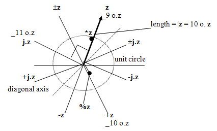
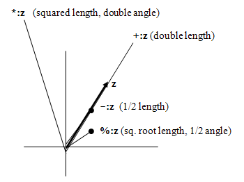
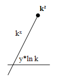

J-ottings 50
J-ottings 50; If you think J is complex, try j
Vector 23:4, page 106
This article is about the facilities available in J for handling complex numbers, something which is greatly helped by a few simple diagrams.
1. The two complex number constructors¶
Although complex numbers are readily input using numeric constants, e.g. 12.5j_7.9, in meaningful applications the components are more likely to be expressions from which complex numbers are constructed. J has two tools for constructing complex numbers, namely j. and r. These correspond to their two possible representations, namely as 2-lists of Cartesian (that is x-y) coordinates, and as 2-lists of polar coordinates (that is {length, angle}). The way in which j. and r. work is illustrated by
The second of these results shows that 2 times the coordinates of the end point of a radius of the unit circle at an angle of 1 radian are approximately (1.08, 1.68). For primary input in the form of 2-lists use insert:
Informally, j. compresses x-y coordinates into complex numbers, and r. converts polar representation to complex number form. Monadic j. is dyadic j. with a default left argument of 0, while monadic r. is dyadic r. with a default left argument of 1. It is not a coincidence that these defaults are the identity elements of addition and multiplication. r.k where k is real returns the Cartesian coordinates of the point on the unit circle whose polar coordinates are (1,k), for example
r.k is represented by eik in maths and thus by ^j.k in J, an operation also available through the circle verb as _12 o.k. The fact that r. and ^j. are synonyms links the two complex number constructors. More generally the circle functions with arguments in the ranges {9…12} and {_9…_12} are directly relevant to complex number construction, and they too have synonyms which will emerge as the discussion continues. The equivalence of r. and ^j. will come to the fore later in section 6 when discussing complex powers.
2. The complex number deconstructors¶
The construction process is reversed (that is complex numbers are converted back to 2-lists) by +. for Cartesian coordinates and *. for polar coordinates:
+.2j1 1.0806j1.682941 NB. +. reverses j./
2 1
1.0806 1.68294
*.2j1 1.0806j1.682941 NB. *. reverses r./
2.23607 0.463648
2 1
The circle verb provides the opportunity to obtain the components of +. and *. one by one:
9 11 o.2j1 NB. 9 o. is x. , 11 o. is y
2 1
10 12 o.2j1 NB. 10 o. is length, 12 o. is angle
2.23607 0.463648
The following is a ‘rule of thumb’ table which summarises the meanings of the circle verbs and incorporates the above ideas :
| n o. | n o. | ||
| _9 | identity | ||
| _10 | conjugate | ||
| construct | deconstruct | ||
| _11 | j. | +. | 9, 11 |
| _12 | r.(^j.) | *. | 10, 12 |
3. Monadic operations with complex numbers¶
J provides alternative routes for several common complex numbers operations. In the diagrams below, a complex number z is represented by the arrowed line, and other points represent the results of the fundamental monadic arithmetic operations of addition, subtraction, multiplication and division, separately and in combination with j. as well as those of the circle functions which are synonyms.


The symbol ± is used here to denote either of the verbs +@-@j. or -@+@j. since they are equivalent. The points z ±z -z +z represent a rectangle formed by reflections in the x and y axes with vertices visited anti-clockwise, while the points j.z ±j.z -j.z +j.z represent a rectangle formed by reflections in the diagonal axes with vertices visited clockwise. In addition to the three circle function synonyms shown for circle functions, _12 o. is a synonym for r. as noted earlier.
The symmetries of rectangles can be represented by groups of verbs of order 4 in which I is the identity verb :
| Rotations | {I - j. -j.} |
j. -j. are anticlockwise/clockwise rotations of π/4 |
| Reflections | {I - + ±} |
+ ± are reflections in main axes, |
{I - ±@j. +@-j.} |
±@j. +@-j. are reflections in diagonal axes |
From these as starting points the full order-8 group table for the symmetries of the square can easily be obtained.
4. Basic dyadic operations¶
The basic operations + - * % behave as expected, and rules such as the following are obeyed:
|5j2*3j4 NB. modulus of a product is ..
26.9258
(|5j2)*(|3j4) NB. .. the product of moduli
26.9258
12 o. 5j2*3j4 NB. the angle of a product ..
1.3078
+/12 o. 5j2 3j4 NB. .. is the sum of the angles
1.3078
Also
is equivalent numerically to
|
|
= |
|
and
|
|
= |
|
showing that multiplication of complex numbers is equivalent to the inner product +/ .* for matrices of the form
| a | –b |
| b | a |
When multiplication takes the angle outside the range [-π, π], *. and 12 o. automatically make a wraparound to bring the angle back into range, for example
wrap=.3 :0
t=.(o.2)|y.
if.t>o.1 do.t=.t-o.2 end.
)
+/12 o._5j2 _3j4 NB. sum of angles exceeds pi
4.97538
12 o._5j2*_3j4
_1.3078
wrap 4.97538 NB. 4.975.. + 1.307.. = 2pi
_1.3078
Complex numbers raised to real powers are the subject of de Moivre’s theorem. This depends on the fundamental relation
e iθ = cos θ + i sin θ
which in J expresses the fact that the verbs ^@j. and j./@(2 1&o.) are equivalent. De Moivre’s theorem says that
(re iθ) n = r n e inθ = r n {cos nθ + i sin nθ}
so to raise complex z to the power n its modulus should be raised to the power n and its angle multiplied by n. To see this in action raise 2j1 to the powers 1, 2 and 8 in first Cartesian and then polar form:
+.2j1^1 2 8
2 1 NB. modulus = sqrt(5)
3 4 NB. modulus = 5
_527 _336 NB. modulus = 625 = 5^4
*.2j1^1 2 8
2.23607 0.463648 NB. (length,angle) for 2j1
5 0.927295 NB. (length,angle) for 2j1 ^2
625 _2.574 NB. (length,angle) for 2j1 ^8
The angle in the last line above can be confirmed by
It may be tempting to use the circle function _3 o. arctan to obtain angles, but this only works in simple cases because the range of arctan is [-π/2, π/2]. The range for complex numbers is double this because arctan makes no distinction between (-x)/y and x/(-y), whereas the difference between second and fourth quadrants is significant in dealing with complex numbers.
5. The enhanced arithmetic operations¶
The second diagram illustrates the actions of the J verbs which are obtained from the basic arithmetic operations by adding ‘colon’ to make a di-gram:

Only one of these four forms – namely %: – extends to the dyadic case, for example 4%:z means (4th root of length, ¼ angle).
In the case of di-grams formed by adding full-stop 1-.z is the same as with real numbers and %. and % are exactly equivalent. If either *. or +. are applied to real scalar numbers the results are 2-lists made by joining zeros. This can be used as a method of stitching 0s as in
With real numbers dyadic *. and +. are LCM and GCD respectively, but these should not be used with complex arguments in the expectation of obtaining the separate GCDs and LCMs of their components. For example
6. Complex Powers and Logarithms¶
To understand complex powers, start with the synonym relationship between r. and ^j. (or _12 o.), which at first sight should lead to j. and ^.r. also being synonyms. This is indeed true in some cases:
but not always:
This is because, unlike in real arithmetic, the logarithm of a complex number is not a single-valued function. In Cartesian coordinates, x and y values stretch out indefinitely in both directions, but in polar coordinates angles wrap around in cycles of 2π in the manner defined by the verb wrap above. In mathematical notation,
ln(z) = ln(reπiθ) = ln(r) + i(θ + 2kπ)
where k is an integer. As a matter of arbitrary (but natural!) choice, J returns the unique angle which lies in the range [-π, π]. The same wrapping process applies when real numbers are raised to complex powers :
More specifically, if k is real and z=x+iy, then kz is illustrated by

The cases ‘complex raised to real’ (de Moivre’s theorem) and ‘real raised to complex’ have now been covered, leaving only the case ‘complex raised to complex’ to be dealt with. An interesting starting point is the number ii, which at first sight should be about as complex as it gets:
Not so! To explain this result, consider first ln(ii)=i×ln(i). Using the formula
ln(reπiθ) = ln(r) + i(θ + 2kπ)
and choosing k=0 (as J does) to make the logarithm single-valued, gives lni = 0+iπ/2 which, when multipled by i, gives -π/2. ii must therefore be e-π/2, which has the value 0.20788 to 5 decimal places. This sequence of calculations is confirmed by
Here is the ii calculation spelt out in a single line:
The verb ln fulfils the familiar ‘reduce multiplication to addition’ property of logarithms of real numbers, that is
log(ab) =
loga +
logb
, for example:
For powers where both w and z are fully complex (that is, have non-zero imaginary parts) the following sequence of equivalences
wz = (eln w)z = (ez)ln w = ezln w
leads to, for example
2j1^1j3 NB. 2j1 to the power 1j3
_0.537177j0.145082
^1j3*j./ln 2j1 NB. e to the power ln w
_0.537177j0.145082
It is not easy, perhaps impossible, to visualise the relationship of wz to w and z diagrammatically, that is the link of _0.537177j0.145082 with 2j1 and 1j3 is a numerical rather than a graphical one. The same is true for other functions which can accept complex arguments, for examples trig ratios and their inverses. Also the logarithms concerned must be to the base e. e is one of the five most fundamental numbers in the universe, namely 0, 1, e, π and i, which are connected by the equation 1+eπi=0. It is reasonable to suppose that advanced intelligent communicators from outer space (if such there be) would certainly try to convey this set of numbers to us as an immediate lingua franca. This equation can be expressed in J in the following three equivalent ways:
The equation 1+eπi=0 can be rewritten ln(-1)=πi, which, since ln(-r)=ln(r)+ln(-1), means that the natural logarithms of negative real numbers are obtained by appending jπ to the logarithm of the corresponding positive number. For example:
7. Extension to Quaternions¶
Given a matrix of the form
| a | –b |
| b | a |
where a and b are real numbers, e.g.
and an inner product of M with a 2-list such as
the same information could be obtained by multiplying two complex scalars:
Similarly finding the determinant of M is equivalent to a couple of operations on a complex scalar:
Thus complex numbers can be used as a means of reducing the rank level of some operations. An ‘obvious’ question is then: if complex data can reduce rank-2 operations to rank 1, can it correspondingly reduce rank-3 operations to rank 2? This speculation is not unique to J, in fact the question was answered in the mid-19th century by Sir William Hamilton, who discovered that this progression is multiplicative rather than additive; that is, that the next step up is not from 2 to 3 but from 2 to 4.
First define a verb which transfoms a 2-list of real scalars into a matrix of the above form:
Next observe that is possible to have a matrix with complex coefficients which nevertheless has a real determinant, for example:
The matrix C has the form
PjQ |
(–R)j–S |
RjS |
PjQ |
which is the form
| a | –b |
| b | a |
extended to complex elements. Straightforward arithmetic shows that the determinant of a matrix of the above form has a real part
(P2–Q2+R2–S2)
and an imaginary part 2(PQ+RS) and so, if PQ=–RS, as is the case with C, the determinant is real, otherwise not. In the ‘all real’ case, Q=S=0 and det(M)=P2–R2.
If the form is now changed to
PjQ |
(–R)jS |
RjS |
Pj–Q |
that is,
| a | |
| b |
where the dashes denote complex conjugates, then the determinant is arithmetically guaranteed to be real for all values of P, Q, R and S. If this is now taken as a standard form then four fundamental matrices obtainable by setting each of P, Q, R and S to 1 and the other three to zero correspond to unit points on the axes of a four-dimensional geometrical space as denoted by (1,0), (0,1), (i,0) and (0,i). A verb analogous to r2ltom which constructs the above matrix from a 2-list of complex scalars is
Define variables to correspond to (1,0), (0,1), (i,0) and (0,i):
]'I i j k'=.c2ltom &.> 1 0 ;0 1;0j1 0;0 0j1
+---+----+--------+-------+
|1 0|0 _1|0j1 0| 0 0j1|
|0 1|1 0| 0 0j_1|0j1 0|
+---+----+--------+-------+
and self-multiply each of these matrices:
times=.+/ .* &.> NB. matrix multiply
times~ i;j;k NB. squares of i, j and k
+-----+-----+-----+
|_1 0|_1 0|_1 0|
| 0 _1| 0 _1| 0 _1|
+-----+-----+-----+
times~^:2 i;j;k NB. 4th powers of i, j and k
+---+---+---+
|1 0|1 0|1 0|
|0 1|0 1|0 1|
+---+---+---+
which shows that i2=j2=k2=–I and i4=j4=k4=I where I is the identity matrix. Now multiply i, j and k by each other:
(i;j;k)times(j;k;i) NB. result is k;i;j
+-------+----+--------+
| 0 0j1|0 _1|0j1 0|
|0j1 0|1 0| 0 0j_1|
+-------+----+--------+
(j;k;i)times(i;j;k) NB. result is (-k);(-i);(-j)
+---------+----+--------+
| 0 0j_1| 0 1|0j_1 0|
|0j_1 0|_1 0| 0 0j1|
+---------+----+--------+
det&> i;j;k NB. determinants equal 1
1 1 1
If i, j and k are raised to third powers a further three matrices not previously encountered arise:
]'ci cj ck'=.(i;j;k)times(i;j;k)times i;j;k
+----+--------+---------+
| 0 1|0j_1 0| 0 0j_1|
|_1 0| 0 0j1|0j_1 0|
+----+--------+---------+
but now, however much the set of eight matrices I, -I, i, j, k, cj, ck, ci are intermultiplied, the result is always another member of the set, for example:
(i;j;k)times cj;ck;ci NB. result is ck;ci;cj
+---------+----+--------+
| 0 0j_1| 0 1|0j_1 0|
|0j_1 0|_1 0| 0 0j1|
+---------+----+--------+
The set of eight matrices possesses the properties of a group, more specifically the quaternion group. Although there are eight elements in the group these are all related to each other, and the whole set of seven excluding the identity matrix can be generated from any two. For example if i and j are chosen as generators, k is ij, ci and cj are defined as powers of i and j, and ck is cj multiplied by ci. The seventh matrix is the common value of i2 and j2.
If, analogous to j, J were to contain two further independent number constructors k and m such that 2j3k4m5 were a scalar, and the same rules i2=j2=k2=–I and i4=j4=k4=I applied where I=l, i=0j1k0m0, j=0j0k1m0, k=0j0k0m1 then these scalars would be recognised mathematically as hypercomplex numbers. The four basic hypercomplex numbers for which the real elements are (1 0 0 0), (0 1 0 0), (0 0 1 0) and (0 0 0 1) would follow the same multiplication structure as the set of eight matrices, and form a group isomorphic with the quaternion group.
A scalar such as 0j3k4m5 whose first element is zero corresponds to a pure quaternion and so pure quaternions exactly match points in three-dimensional space, or quantities such as E, B, H which define electro-magnetic fields as three-dimensional entities. Such equivalences are of course only useful if the operations employed on them are guaranteed to produce further pure quaternions.